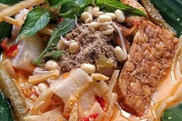
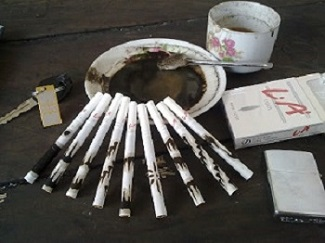
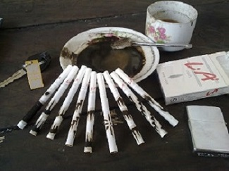

Makanan
-
Lodho Ayam Kampung
-
Punten Pecel
-
Sompil
Ayam Lodho Tulungagung merupakan makanan khas Tulungagung, Jawa Timur yang biasa disajikan sajian untuk hari raya agama Islam seperti Idulfitri dan Iduladha maupun tradisi selamatan. Namun sekarang ayam lodho sudah bisa dikonsumsi sehari hari dan juga sudah banyak dijual di rumah makan. Sekilas Lodho ayam Kampung ini mirip seperti opor ayam akan tetapi yang membedakan yakni proses memasak ayam yang dibakar terlebih dahulu menggunakan pawonan sehingga rasanya pun gurih dan smokey serta pedas.

Punten sendiri adalah beras yang dimasak dengan santan sehingga menghasilkan rasa gurih, kemudian setelah matang nasi ditumbuk sampai kalis dan kemudian disajikan dengan salmbal kacang serta sayur sayuran rebus mirip dengan nasi pecel pada umumnya.

Makanan ini terdiri dari lontong yang disiramayur rebung, tahu, nangka muda, kacang, lontong, dan sambal kacang. sompil dibungkus dengan alas daun pisang, kemudian disantap bersama dengan tempe goreng dan krupuk
 
